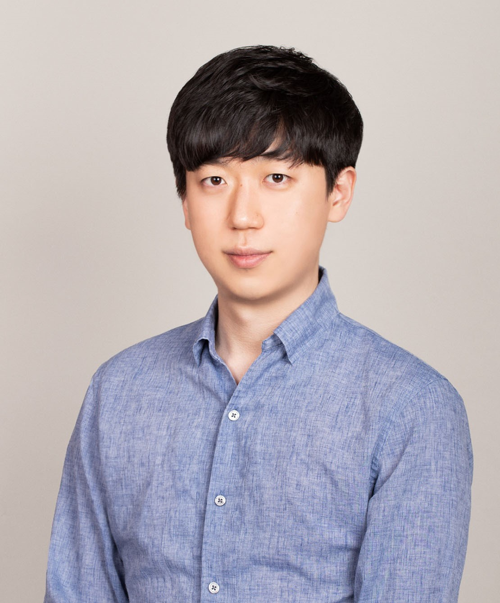

Tae Jun Ham
Senior Staff Software Engineer at Google | Datacenter Performance & HW/SW Co-Design
About Me
I am a Senior Staff Software Engineer and Tech Lead at Google, focusing on hardware/software performance, resource efficiency, and co-design for Google's datacenter fleet and distributed systems infrastructure. Specializing in cross-stack optimization, my work bridges distributed systems and silicon microarchitecture to untangle complex system behaviors, optimize foundational infrastructure, and guide future SoC designs.
Prior to joining Google, I was a postdoctoral researcher at Seoul National University. I received my Master's and Ph.D. in Electrical Engineering from Princeton University under the supervision of Professor Margaret Martonosi, and a B.S.E. degree from Duke University. My research centers on hardware-software co-design for emerging applications and data access optimizations across systems and architectures.
Throughout my career, I have published 30+ works in top computer architecture and systems venues (ISCA, ASPLOS, MICRO, HPCA, ATC, MLSys, etc.). My research emphasizes architectural acceleration and co-design, with key highly-cited contributions including early Transformer/Attention accelerators and a graph analytics accelerator. My work has been recognized with the Best Paper Award at MICRO-49, IEEE Micro Top Picks (including Honorable Mention), a Best Paper Award Nomination at ISPASS, and the Samsung Scholarship. I also actively serve on program committees for leading conferences in the field.
Education
Ph.D. in Electrical Engineering
Princeton University
Sep 2012 - Jun 2018
Advisors: Margaret Martonosi and Juan Luis Aragon
Dissertation: Efficient data accesses in accelerator-based heterogeneous architecture
Bachelor of Science in Electrical and Computer Engineering
Duke University
Aug 2009 - Dec 2011
Summa Cum Laude with Distinction in Electrical and Computer Engineering (GPA: 3.95 / 4.00)
Experience
Senior Staff Software Engineer
Google · Full-time
Sep 2021 - Present
Lead technical strategy for cross-stack performance, hardware/software co-design, and resource efficiency across Google's datacenter fleet and distributed systems. Previously was a tech lead manager for a ~20-person team before transitioning to a strategic technical lead role.
- Datacenter Efficiency: Led fleet-wide optimization initiatives across compute, memory, and storage, delivering significant capacity savings.
- Hardware/Software Co-Design: Bridge distributed systems and silicon microarchitecture to evaluate, optimize, and guide the architectural design of future SoC and server platforms.
- ML for Systems: Focus on leveraging machine learning to drive system efficiency and performance, and unlock new opportunities in hardware/software co-design.
Postdoctoral Researcher
Seoul National University
Jul 2018 - Jul 2021
Focused on Computer Architecture and Systems research.
Supervisor: Jae W. Lee.
(Note: My position at Seoul National University also fulfilled my mandatory military service duty)
Research Intern
Microsoft Research
May 2016 - Aug 2016
Investigated and designed an efficient secure memory architecture featuring near-data computation.
Collaborator: Stavros Volos.
Research Intern
Intel Labs
May 2015 - Nov 2015
Conducted research and development on a custom hardware accelerator tailored for graph analytics.
Collaborator: Lisa Wu Wills.
Research Intern
AMD Research
Jun 2013 - Aug 2013
Explored heterogeneous memory systems, focusing specifically on stacked DRAM architectures and performance optimization.
Collaborator: Joseph L. Greathouse.
Research Intern
Samsung Advanced Institute of Technology
Jun 2012 - Aug 2012
Investigated GPU branch divergence problems and proposed architectural solutions to improve execution efficiency.
Collaborator: Yeon-Gon Cho.
Research Assistant
Systems Architecture Integration Lab, Duke University
Jan 2012 - May 2012
Research on efficient control and management of the heterogeneous memory system.
Advisor: Benjamin C. Lee.
Honors and Awards
- IEEE MICRO Top Picks (2021)
Genesis paper is selected as one of top 12 computer architecture papers of 2020 - IEEE MICRO Top Picks Honorable Mention (2021)
Graphene paper is selected as one of top 24 computer architecture papers of 2020 - ISPASS Best Paper Award Nominee (2020)
MosaicSim paper is selected as the Best Paper Nominee in ISPASS 2020 - MICRO-49 Best Paper Award (2016)
Graphicionado paper is selected as the Best Paper in MICRO 2016 - IEEE MICRO Top Picks Honorable Mention (2016)
DeSC paper is selected as one of top 23 computer architecture papers of 2015 - Facebook Graduate Fellowship Finalist (2016)
- Gordon Y.S. Wu Fellowship (2012-2017), Princeton University
Prestigious award given to top incoming graduate students. - Samsung Scholarship (2012-2017)
Prestigious award given to Korean students studying in US. Up to $50,000 per year for five years of graduate studies. - Summa Cum Laude (2011), Duke University
Latin honor given to top graduates of the class
Research Focus
ML: Compute & Accelerators
- Transformer Acceleration
-
Embedding Reduction via Memoization
MERCI ASPLOS'21
-
Layer-Wise NPU Scheduling
Layerweaver HPCA'21
-
ANN Search Architecture
Anna HPCA'22
-
Sub-8-bit Matrix Multiplication
Ulppack MLSys'22
-
RRAM-Based DNN Inference
Wordline Parallelism ICCAD'20
ML: Storage & Data Pipelines
-
SSD-Enabled Large-Batch Training
FlashNeuron FAST'21
-
Flash-Centric Training Accelerators
Behemoth FAST'21
-
I/O Stack Specialization for ML
SSDStreamer IEEE Micro'19
-
Flash-based DNN Inference
Leviathan TC'22
-
Accelerator-Friendly Image Formats
L3 Lossless Format ECCV'22
Domain-Specific Accelerators
-
Graph Analytics Accelerators
Graphicionado MICRO'16
-
Genomic Data Analysis Frameworks
Genesis ISCA'20
-
Garbage Collection Accelerator
Charon MICRO'19
-
Paging Accelerator
Case for HW Paging ISCA'20
- Search Accelerators (SCM & Inverted Index)
-
Object Serialization for Big Data
Cereal ISCA'20
Microarchitecture
- Row Hammer Protection
-
Efficient Data Access
DeSC MICRO'15, TACO'17, TACO'19
-
Disintegrated Memory Control
Energy-Efficient Systems HPCA'13
-
Modular Heterogeneous Simulation
MosaicSim ISPASS'20
Systems & Infrastructure
-
Hot KV Pair Retrieval
SkipLSM SAC'25
-
NVM-Augmented LSM-Trees
LSM-B+ Tree TOS'24
-
Asynchronous I/O Stack
Low-Latency SSD I/O ATC'19
-
Practical Erase Suspension
Low-Latency SSDs ATC'19
-
Mobile App Prepaging
ASAP Fast Switching ATC'21
-
Heap Allocation
MaPHeA Framework TECS'22
Applied ML & Analytics
-
Graph-Guided RAG
Reliable EDA for LLMs EMNLP'25
Publications
-
The 2025 Conference on Empirical Methods in Natural Language Processing
-
The 40th ACM/SIGAPP Symposium on Applied Computing
-
ACM Transactions on Storage
-
The 50th Annual IEEE/ACM International Symposium on Computer Architecture (Retrospective)
-
[HPCA 2022]Mithril: Cooperative Row Hammer Protection on Commodity DRAM Leveraging Managed RefreshThe 28th IEEE International Symposium on High-Performance Computer Architecture
-
[TECS 2022]Maphea: A framework for lightweight memory hierarchy-aware profile-guided heap allocationACM Transactions on Embedded Computing Systems
-
Proceedings of Machine Learning and Systems
-
The 28th IEEE International Symposium on High-Performance Computer Architecture
-
[ECCV 2022]L3: accelerator-friendly lossless image format for high-resolution, high-throughput dnn trainingEuropean Conference on Computer Vision
-
[TC 2022]Architecting a flash-based storage system for low-cost inference of extreme-scale dnnsIEEE Transactions on Computers
-
[ASPLOS 2021]MERCI: Efficient Embedding Reduction on Commodity Hardware via Sub-Query MemoizationThe 26th ACM International Conference on Architectural Support for Programming Languages and Operating Systems
-
USENIX Conference on File and Storage Technologies
-
USENIX Conference on File and Storage Technologies
-
[HPCA 2021]Layerweaver: Maximizing Resource Utilization of Neural Processing Units via Layer-Wise SchedulingThe 27th IEEE International Symposium on High-Performance Computer Architecture
-
[IEEE Micro Top Picks 2021]Accelerating Genomic Data Analytics with Composable Hardware Acceleration FrameworkIEEE Micro Special Issue on Top Picks from the 2020 Computer Architecture Conferences
-
[ISCA 2021]ELSA: Hardware-Software Co-design for Efficient, Lightweight Self-Attention Mechanism in Neural NetworksThe 48th ACM/IEEE International Symposium on Computer Architecture
-
The 48th ACM/IEEE International Symposium on Computer Architecture
-
USENIX Annual Technical Conference
-
[LCTES 2021]MaPHeA: A Lightweight Memory Hierarchy-Aware Profile-Guided Heap Allocation FrameworkACM SIGPLAN/SIGBED International Conference on Languages, Compilers, and Tools for Embedded Systems
-
IEEE International Symposium on Performance Analysis of Systems and Software
-
The 25th ACM International Conference on Architectural Support for Programming Languages and Operating Systems
-
The 26th IEEE International Symposium on High-Performance Computer Architecture
-
[ISCA 2020]A Specialized Architecture for Object Serialization with Applications to Big Data AnalyticsThe 47th ACM/IEEE International Symposium on Computer Architecture
-
The 47th ACM/IEEE International Symposium on Computer Architecture
-
The 47th ACM/IEEE International Symposium on Computer Architecture
-
The 53rd IEEE/ACM International Symposium on Microarchitecture
-
[ICCAD 2020]Unlocking Wordline-Level Parallelism for Fast Inference on RRAM-Based DNN AcceleratorThe 39th IEEE/ACM International Conference on Computer-Aided Design
-
ACM Transactions on Architecture and Code Optimization
-
USENIX Annual Technical Conference
-
USENIX Annual Technical Conference
-
[MICRO 2019]Charon: Specialized near-memory processing architecture for clearing dead objects in memoryThe 52nd IEEE/ACM International Symposium on Microarchitecture
-
IEEE Micro, Sep/Oct 2019
-
[TACO 2017]Decoupling data supply from computation for latency-tolerant communication in heterogeneous architecturesACM Transactions on Architecture and Code Optimization
-
[MICRO 2016]Graphicionado: A High-Performance and Energy-Efficient Accelerator for Graph AnalyticsThe 49th IEEE/ACM International Symposium on Microarchitecture
-
[MICRO 2015]DeSC: Decoupled Supply-Compute Communication Management for Heterogeneous ArchitecturesThe 48th IEEE/ACM International Symposium on Microarchitecture
-
The 19th IEEE International Symposium on High-Performance Computer Architecture
Patents
-
Apparatus and method with schedulingUS Patent 12,524,267 (2026)
-
Scheduler, method of operating the same, and accelerator apparatus including the sameUS Patent 12,277,440 (2025)
-
Processor, method of operating the processor, and electronic device including the sameUS Patent 12,327,179 (2025)
-
Layer-wise scheduling on models based on idle timesUS Patent 12,099,869 (2024)
-
Hardware accelerator performing search using inverted index structure and search system including the hardware acceleratorUS Patent 11,544,270 (2023)
-
Hammer refresh row address detector, and semiconductor memory device and memory module including the sameUS Patent 11,568,917 (2023)
-
Method for candidate selection and accelerator for performing candidate selectionUS Patent 11,636,173 (2023)
-
Device for accelerating self-attention operation in neural networksUS Patent App. 17/864,235 (2023)
-
Accelerator system for training deep neural network model using nand flash memory and operating method thereofUS Patent App. 18/089,141 (2023)
-
Method for processing page fault by processorUS Patent 11,436,150 (2022)
-
Electronic device and method with schedulingUS Patent App. 17/195,748 (2022)
-
Instruction, Circuits, and Logic for Graph Analytics AccelerationUS Patent App. 15/089,232 (2017)
Professional Service
- MICRO: Program Committee (2026), External Review Committee (2025), External Review Committee (2024), Student Research Competition Selection Committee (2023)
- HPCA: Program Committee (2025, 2026), Industry Track Program Committee (2026)
- ISCA: Program Committee (2025), External Review Committee (2024)
- ASPLOS: Program Committee (2023, 2024), External Review Committee (2019)
- IISWC: Program Committee (2024)
- YArch: Program Committee (2024)
- IEEE Micro Top Picks: Program Committee (2023)
- CGO: Web Chair (2021, 2022)
- Journal Reviews: IEEE Transactions on Computers (TC), IEEE Transactions on Very Large Scale Integration Systems (TVLSI), IEEE Transactions on Computer-Aided Design of Integrated Circuits and Systems (TCAD), IEEE Transactions on Mobile Computing (TMC), IEEE Computer Architecture Letters (CAL), IEEE Micro, ACM Transactions on Architecture and Code Optimization (TACO), ACM Transactions on Parallel Computing (TOPC), Elsevier Future Generation Computer Systems (FGCS)
Selected Talks
- POSTECH Summer AI Seminar (2020): Hardware/Software Co-design for Modern AI and Data Analytics Applications
- Seoul National University AI Summer School (2020): Accelerating Neural Network Attention Mechanism with HW/SW Codesign
- HiPEAC Conference (2020): Efficient Data Supply for Parallel Heterogeneous Architectures
- DARPA HIVE PI Meeting (2017): Graphicionado: A High-Performance and Energy-Efficient Accelerator for Graph Analytics
- KAIST/POSTECH (2017): DeSC: Decoupling Data Supply from Computation for Latency-Tolerant Communication
Research Mentoring & Supervision
During my tenure as a postdoctoral researcher at Seoul National University, I closely mentored and collaborated with the following students (in partnership with Prof. Jae W. Lee), overseeing research projects from initial concept through system implementation to high-impact publication.
Graduate Students
- Jaeyoung Jang (Ph.D., SKKU → Samsung Electronics)
- Young H. Oh (Ph.D., SKKU → Samsung Electronics → Ajou University)
- Jun Heo (Ph.D., SNU → Samsung Electronics → MangoBoost)
- Jonghyun Bae (Ph.D., SNU → LBNL → Google Visiting Researcher → HyperAccel)
- Shine Kim (Ph.D., SNU → Samsung Electronics)
- Seung Yul Lee (Ph.D., SNU → SNU Postdoc)
- Yeonhong Park (Ph.D., SNU → Meta)
- Wenjing Jin (Ph.D. student, SNU → Samsung Electronics)
- Sung Jun Jung (Ph.D., SNU → SK Hynix)
- Yejin Lee (Ph.D., SNU → Meta)
- Seong Hoon Seo (Ph.D., SNU)
- Soosung Kim (Ph.D., SNU)
- Jeonghun Gong (M.S., SNU → Samsung Electronics)
- Yunho Jin (M.S., SNU → Harvard Ph.D. → Google)
- Sam Son (M.S., SNU → UC Berkeley Ph.D. → Meta)
- Hyunji Choi (M.S., SNU → Meta)
Undergraduate Students
- Jaeyeon Won (B.S., SNU → MIT Ph.D.)
- Stuart Sul (B.S., SNU → Blux → Stanford M.S. → Cursor)
- U Gyeong Song (B.S., SNU)